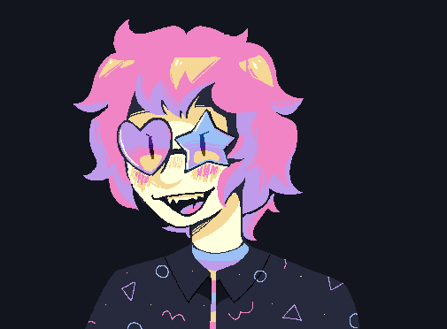

Hello, I am Goose!

I'm a game designer, artist, and MSPaint enthusiast!
I'm currently a third year Game Design & Development student at the Rochester Institute of Technology.
Here you can look through my resume, a variety of different projects ranging from professional to fun side ones, as well as my artistic portfolio!
My current skillset includes a variety of different programming languages, game engines, as well as a handful of artistic programs. I am a completely self-taught digital and traditional artist, with classes only strengthening the pre-existing skills I had already aquired throughout my life. Programming, on the other hand, was something I learned throughout college. I had less then zero knowledge prior to becoming a student, however I am a passionate learner and have picked up most knowledge with ease.
The languages I am familiar with are C#, C++, Javascript, and HTML. I am currently still developing my C++ skills, however.
The programming softwares & game engines I am familiar with are Visual Studio, Visual Studio Code, Unity, and Godot. I am still getting myself comfortable with using Unity and Godot, however.
The artist programs I am familar with are Photoshop, Clip Studio Paint, Aseprite, Toon Boom, Adobe Substance Painter, Maya, and Blender. As well as MSPaint, my beloved. I am comfortable using each of these programs!
Personally, I would consider myself a jack of all trades; a unicorn if you will. I feel comfortable and confident no matter the tasks I am given, however I tend to lean on the design-aspects of projects if given a choice.